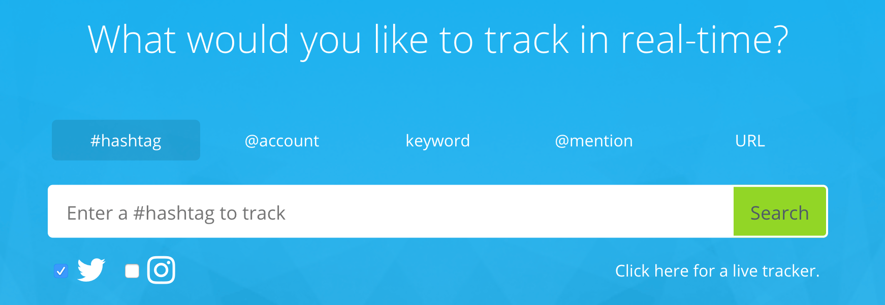

Thanks to social media, people can voice their opinions on individuals, companies, and brands. In short, they can talk about anything or anyone. They can ask questions, lodge complaints, and even give praise. These days, customers communicate with brands via social media more than any other medium. Therefore, companies and brands must listen carefully to what’s being said online.
Social media listening (or social media monitoring) means identifying and assessing what people are saying about you, your product, company, or brand online. Billions of conversations happen daily, and when you know what’s being said about your company or brand, you can make wise business decisions. The objective of social listening isn’t to know what people are saying about you, it is to act on what they are saying. Many social media marketers assume that social monitoring means focusing on metrics. However, metrics are just a part of the equation.
Social listening gives you a deeper insight into customers, competitors, and influencers. But in order to optimize social media listening, you need to monitor social networks. Getting insights takes time, and you have to use the right tools. Here are 4 amazing tools for social media monitoring.
4 Must-Have Social Listening Tools
#1 Google Alerts
One of Google’s less popular gems, this free tool generates results based on the keywords you provide and sends them via email. Many marketers and businesses depend on these alerts to learn more about their products and competitors. You can also use Google Alerts to keep track of interesting topics, trends, and any news on the web.
To start using the service, enter the keyword you’d like to receive alerts on. A sample of your alert will appear. After you enter a valid email address, Google will send the results. You can choose the sources you would like to search from, how frequently you would like to receive results and the search volume. You can use Google Alerts to maximize your brand, sales, and traffic. It is easy to set up.
#2 Mention
Mention is a tool designed to search the web and find conversations about your brand. Much similar to Google Alerts, it monitors search engines, social networks, blogs, and other sites in real time and informs you every time someone mentions your brand, name, or target keyword. It also displays the source, language, and time of the mentions. It offers detailed analytics and allows you to sync social accounts. Mention can be used on the web, desktop, iPhone, and Android. It also sends summary alerts on a daily basis which show the top mentions for that day.
Mention allows you to filter unwanted mentions, such as those meant for people with the same name as you. It allows you to easily find the most important mentions. You can monitor your mentions in 42 languages. The tool has an interface that is easy to use and built-in task management functionality. Whether you want to see customer complaints or to track your competitors, Mention is the tool to use. It has a 14-day free trial and the Pro plans start at €29 per month.
#3 Social Mention
Social Mention is your eyes and ears on social media. You can use it to learn more about an individual, company, or brand. It helps you to see who is talking about you, your company, or any topic you are interested in. It combines content from different social platforms and puts it in one place so you can analyze it easily. The best thing about the tool is that it is free yet highly effective.
You can search the platform or opt to receive daily email alerts of your company, brand, marketing campaign, or competitor. A search will display a list of mentions, which you can sort by source, date, and time. Each search result gives a percentage for passion, sentiment, strength, and reach. To receive specific results, use the advanced search feature when searching. Select the places you want the search tool to look for your keyword in. It could be videos, blogs, images, or microblogs.
#4 Keyhole

Keyhole is a real-time social media analytics tool that tracks keywords and mentions across Instagram and Twitter. The tool’s dashboard analyzes data around total posts, impressions and reach. It ranks influencers based on average post engagement rate which makes it easy to identify the most influential users in the space. Keyhole is well known for tracking hashtags but the tool is also able to track keywords, account mentions, and URLs.
What we liked about this tool is the Influencers View, where you can see a list of top influencers engaging with your brand. You can easily compare them based on their engagement rates, follower count, exposure or impressions. This is very useful when recruiting brand advocates.
Check out this article to find out how to do a complete Instagram hashtag research using keyhole and JARVEE, in just 10 minutes.
Wrapping Up
Social media has changed the way people communicate, form new friendships and promote their brands or products. If you use social media for marketing purposes, you have to monitor what’s being said about you or your brand online. While it’s no secret that social listening is a difficult task, the right tools can help you to perform the task efficiently. You can monitor your mentions, track your progress, and determine the impact that social media has on your brand.
Now, over to you: What are your favorite social media monitoring tools? Let us know in the comment section!
Moss Clement says
Hi Adam,
Great article on the best social listening and monitoring tools. These tools are super amazing. I have used Google alerts. And as you mentioned, marketers are kind of over looking this tool, or in order words, they’re undermining its potential.
However, there other tools in this Cathay are equally remarkable. Some of these are:
Twitter Counter, Digimind, TweetReach, Sprout Social, Klout, Buzzlogix, etc
Buzzlogix for example is amazingly interesting. But please, note that it has a free and premium version.
This tool will help you identify all the buzz about your products, making it easier for you to know what consumers are saying about your services. It also enables you to monitor your competitors as well as help you manage your social media accounts.
In fact, it has fascinating features that cannot be mentioned here.
Thanks for sharing this insightful article!
GK says
Thanks Moss, nice addition to the list. Which one are you using now?
Katya says
Been using Google Alerts but I’ve been hearing good things abt. Mentions, will try it out real soon. Or prolly do all
Brad says
Thanks Adam!
Even I know how important is to monitor what people are saying about your brand, I just recently started to actually research this topic and learn. I’m still a newbie, but hopefully will be able to get more valuable insights through the tools you recommended.
Adam says
I am sure they will help a lot 😉
Nakia says
Yes, it’s important to keep tabs on people’s opinion of you/your brand, gives you room to improve or fix what needs to be. Great recommendations you got there, will make it easier to do the task.
Adam says
Thanks for commenting Nakia 🙂
Vivienne says
I was googling for similar tools and really glad I clicked on this. Not only did I stumble upon a good piece, found a gem in Jarvee..trying it now
Adam says
I am sure you’re going to love it!
Michael says
Great tools!
I would like to recommend one more social media tool for monitoring – Snoopreport https://snoopreport.com. It tracks user actions on Instagram as likes, comments and follows so you can monitor customers and competitors to update the social media marketing campaign
Rahul Yadav says
Great list of tools, a few I don’t know but will definitely check out. Thanks!